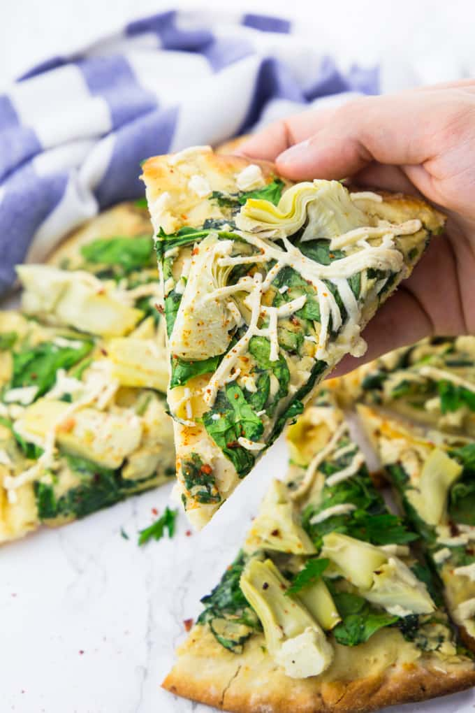

Recipe for Pizza

Description
This is a recipe for a pizza
I prefer to make mine vegan
Ingredients
- 1 can white beans
- 1/4 cup water
- 2 tablespoons nutritional yeast
- 1/2 cup cashews
- 1 tablespoon fresh lemon juice
- 1 onion, chopped
- 5 cups fresh spinach
- 2 cloves of garlic, minced
- 1 can artichoke hearts, drained
- salt
- black pepper
- red pepper flakes
- 2 pre-made pizza dough
- 1/2 cup vegan mozzarella cheese
Steps
- Preheat the oven to 350 °F.
- Rinse an drain the canned white beans and put them in a blender
together with the cashews, the lemon juice, the water, and the
nutritional yeast. If you want to make it a bit easier for
your blender, you can soak them in water for 4-6 hours
before using them. Put aside.
- Heat some oil in a large pan and sauté the onion for about 3
minutes until they become translucent. After 2 minutes, add
the garlic. Then add 2 cups of the spinach and cook for 3 more
minutes. Stir in the blended white bean and cashew mixture.
Season with salt, pepper, and red pepper flakes.
- Evenly spread on the pizza dough. Cut the artichoke hearts in
quarters and put them on the pizza together with the remaining
spinach. Sprinkle with the vegan cheese.
- Bake the pizza for 8 minutes or check out the instructions on
the package (each pre-made pizza dough is different). Enjoy!